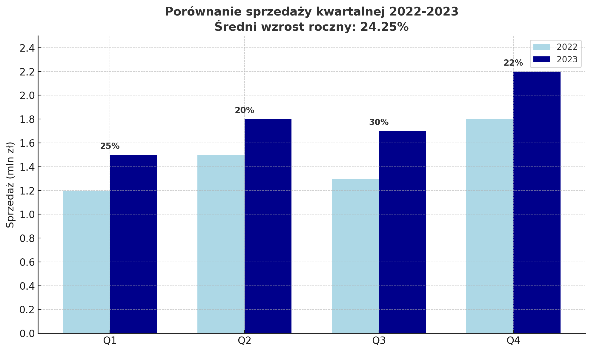

1.1.1 Treść nietekstowa (A)
Opis
Wszystkie treści nietekstowe prezentowane użytkownikowi posiadają alternatywę tekstową, która służy równoważnemu celowi, z wyjątkiem sytuacji opisanych poniżej.
Intencja
Celem tego kryterium sukcesu jest zapewnienie, że wszystkie treści nietekstowe są również dostępne w formie tekstowej. Tekst jest uniwersalny, ponieważ może być prezentowany wizualnie, dźwiękowo, dotykowo oraz w kombinacji tych sposobów.
Przykłady
Dobry przykład
<img src="images/exemplary-image.png" alt="Opis obrazka: Laptop na biurku z otwartą stroną internetową, obok znajduje się kubek z kawą oraz notatnik z długopisem" width="300">Obraz posiada szczegółowy tekst alternatywny, który opisuje zawartość obrazu.
Średni przykład
<img src="images/exemplary-image.png" alt="Obrazek" width="300">Problem: Zbyt ogólny opis alternatywny, który nie przekazuje treści obrazka.
Zły przykład
<img src="images/exemplary-image.png" alt="" width="300">Problem: Brak tekstu alternatywnego dla znaczącego obrazka.
Dekoracyjne obrazy
Dobry przykład - obraz dekoracyjny
<img src="images/decorative.png" alt="" role="presentation" width="300">Obraz jest czysto dekoracyjny, więc pusty atrybucie alt jest odpowiedni. Dodatkowo role="presentation" jeszcze bardziej podkreśla dekoracyjny charakter obrazu.
Zły przykład - zbędny alt dla obrazu dekoracyjnego
Witaj na naszej stronie!
Zapraszamy do zapoznania się z ofertą.
<p>Witaj na naszej stronie!</p>
<img src="images/decorative.png" alt="Ozdobny separator w formie niebieskiej linii" width="300" style="display: block; margin: 3px 0;">
<p>Zapraszamy do zapoznania się z ofertą.</p>Problem: Obraz jest czysto dekoracyjny (separator), ale posiada tekst alternatywny, który niepotrzebnie przerywa czytanie tekstu przez czytniki ekranu i nie dodaje żadnych istotnych informacji.
Złożone obrazy
Dobry przykład - złożone dane
Pełny opis wykresu
Wykres słupkowy przedstawia sprzedaż kwartalną w 2023 roku w porównaniu do 2022 roku:
- Q1 2022: 1.2 mln zł, Q1 2023: 1.5 mln zł (wzrost o 25%)
- Q2 2022: 1.5 mln zł, Q2 2023: 1.8 mln zł (wzrost o 20%)
- Q3 2022: 1.3 mln zł, Q3 2023: 1.7 mln zł (wzrost o 30%)
- Q4 2022: 1.8 mln zł, Q4 2023: 2.2 mln zł (wzrost o 22%)
Średni wzrost roczny: 24.25%
<img src="images/chart.png" alt="Wykres sprzedaży za 2023 rok pokazujący wzrost sprzedaży o 25% w porównaniu do 2022 roku" width="300">
<details>
<summary>Pełny opis wykresu</summary>
<div id="chart-description">
<p>Wykres słupkowy przedstawia sprzedaż kwartalną w 2023 roku w porównaniu do 2022 roku:</p>
<ul>
<li>Q1 2022: 1.2 mln zł, Q1 2023: 1.5 mln zł (wzrost o 25%)</li>
<!-- Pozostałe dane -->
</ul>
</div>
</details>Krótki opis w atrybucie alt oraz szczegółowy opis dostępny po kliknięciu.
Zły przykład - wykres bez odpowiedniej alternatywy
<img src="images/chart.png" alt="Wykres sprzedaży" width="300">Problem: Złożony wykres z danymi ma tylko ogólny opis alternatywny, który nie przekazuje informacji zawartych w wykresie. Użytkownicy korzystający z czytników ekranu nie mają dostępu do danych przedstawionych wizualnie, takich jak wartości, trendy i porównania.